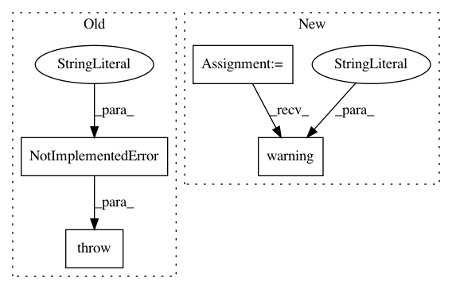

5cf0a414aa1f7c17fdc0eced712de551c335a25c,src/graph_transpiler/webdnn/frontend/chainer/functions/math.py,,_convert_log1p,#Any#Any#,129
Before Change
@ChainerConverter.register_handler("Log1p")
def _convert_log1p(converter: ChainerConverter, c_op: "chainer.functions.Log1p"):
// TODO
raise NotImplementedError("[ChainerConverter] Log1p is not supported")
// noinspection PyUnusedLocal
@ChainerConverter.register_handler("LogSumExp")
After Change
@ChainerConverter.register_handler("Log1p")
def _convert_log1p(converter: ChainerConverter, c_op: "chainer.functions.Log1p"):
console.warning("[ChainerConverter] In WebDNN, \"Log1p(x)\" is converted into \"Log(1+x)\", which is not enough accurate as Log1p when"
"x is so small that \"1 + x == 1\" in floating point accuracy.")
x = converter.get_variable(c_op.inputs[0])
y, = Log(None)(x + 1)
converter.set_variable(c_op.outputs[0](), y)
In pattern: SUPERPATTERN
Frequency: 4
Non-data size: 4
Instances
Project Name: mil-tokyo/webdnn
Commit Name: 5cf0a414aa1f7c17fdc0eced712de551c335a25c
Time: 2017-11-30
Author: y.kikura@gmail.com
File Name: src/graph_transpiler/webdnn/frontend/chainer/functions/math.py
Class Name:
Method Name: _convert_log1p
Project Name: cornellius-gp/gpytorch
Commit Name: e7c110452e1ffa84cdaccf214a1204ebd1a01bbb
Time: 2018-07-19
Author: balandat@fb.com
File Name: gpytorch/kernels/index_kernel.py
Class Name: IndexKernel
Method Name: __init__
Project Name: mil-tokyo/webdnn
Commit Name: 695b173af1e0db468515447b459b59a6a9a626e5
Time: 2017-11-30
Author: y.kikura@gmail.com
File Name: src/graph_transpiler/webdnn/frontend/chainer/functions/math.py
Class Name:
Method Name: _convert_expm1
Project Name: tensorflow/hub
Commit Name: 54a242de6e148d0836c4a58308b07bbe79c274b6
Time: 2019-05-02
Author: no-reply@google.com
File Name: tensorflow_hub/native_module.py
Class Name: _ModuleImpl
Method Name: create_apply_graph